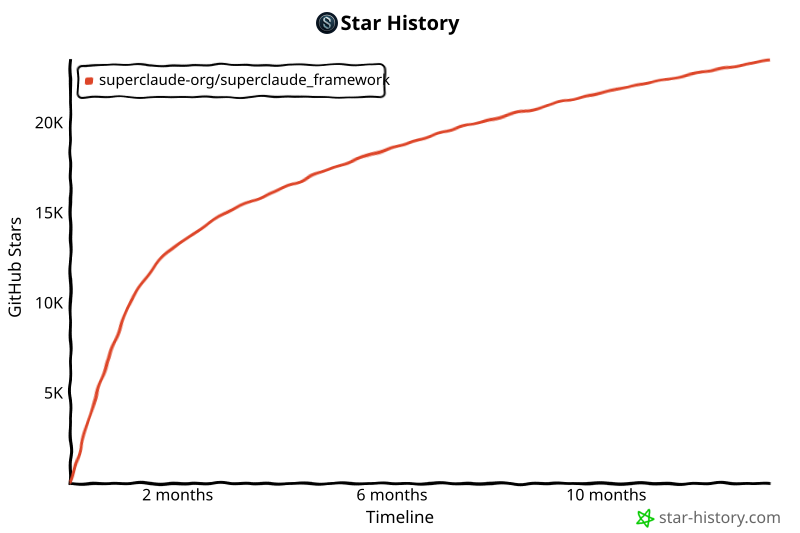

主页
主页
一个「元编程配置框架」:通过行为指令注入与组件编排,把 Claude Code 改造成结构化开发平台,提供系统化的工作流自动化、强力工具与智能 agents。README 另有中文/日文版,并有姊妹项目 SuperGemini、SuperQwen。
SuperClaude 是一个元编程配置框架(meta-programming configuration framework):通过行为指令注入(behavioral instruction injection)与组件编排(component orchestration),把 Claude Code 变成一个结构化开发平台,提供系统化的工作流自动化。
| 文档 | 用途 | 何时读 |
|---|---|---|
| PLANNING.md | 架构、设计原则、绝对规则 | 会话开始、动手实现之前 |
| TASK.md | 当前任务、优先级、backlog | 每天、开工之前 |
| KNOWLEDGE.md | 沉淀的洞察、最佳实践、排障 | 遇到问题、学习模式时 |
| CONTRIBUTING.md | 贡献指南、工作流 | 提 PR 之前 |
| Commands Reference | 全部 30 条 /sc:* 命令的语法、示例、工作流与决策指南 | 学习 SuperClaude、选命令时 |
# Install from PyPI pipx install superclaude # Install commands (installs all 30 slash commands) superclaude install # Install MCP servers (optional, for enhanced capabilities) superclaude mcp --list # List available MCP servers superclaude mcp # Interactive installation superclaude mcp --servers tavily --servers context7 # Install specific servers # Verify installation superclaude install --list superclaude doctor
装完重启 Claude Code,即可使用 30 条命令,包括:
/sc:research —— 深度网络调研(以 Tavily MCP 增强)/sc:brainstorm —— 结构化头脑风暴/sc:implement —— 代码实现/sc:test —— 测试工作流/sc:pm —— 项目管理/sc —— 展示全部 30 条可用命令# Clone the repository git clone https://github.com/SuperClaude-Org/SuperClaude_Framework.git cd SuperClaude_Framework # Run the installation script ./install.sh
团队正在开发新的 TypeScript 插件系统(详见 issue #419)。发布后安装将简化为:
# This feature is not yet available /plugin marketplace add SuperClaude-Org/superclaude-plugin-marketplace /plugin install superclaude
状态:开发中,未定 ETA。
想要 2–3 倍执行速度和省 30–50% token,可选装 MCP 服务器(经 airis-mcp-gateway):
注:错误学习(error learning)由内置的 ReflexionMemory 提供,无需安装。MCP 安装入口:airis-mcp-gateway,细则见仓库 docs/mcp/mcp-integration-policy.md。
功能完整,标准性能
2–3 倍提速,省 30–50% token
原文注:4.1 版本聚焦于稳定斜杠命令架构、增强 agent 能力、改进文档。(README 中版本号并存:统计区标 v4.3.0 稳定版、本节标题为 v4.1、Deep Research 标 v4.2——按原文如实保留。)
各有领域专长:PM Agent 通过系统化文档确保持续学习;Deep Research agent 负责自主网络调研;安全工程师能抓真实漏洞;前端架构师懂 UI 模式;基于上下文自动协同;领域专长按需调用。
更小的框架,更大的项目:框架占用缩减、给你的代码留更多上下文、支持更长对话、复杂操作成为可能。
CLI 一键安装(superclaude mcp --list / --servers tavily context7 / 交互式)。8 个服务器:Tavily(主力网络搜索,Deep Research)、Context7(官方文档查询)、Sequential-Thinking(多步推理)、Serena(会话持久化与记忆)、Playwright(跨浏览器自动化)、Magic(UI 组件生成)、Morphllm-Fast-Apply(上下文感知的代码修改)、Chrome DevTools(性能分析)。
Brainstorming(问对问题)、Business Panel(多专家战略分析)、Deep Research(自主网络调研)、Orchestration(高效工具协调)、Token-Efficiency(省 30–50% 上下文)、Task Management(系统化组织)、Introspection(元认知分析)。
面向开发者的彻底重写:真实示例与用例、常见坑位记录在案、附实用工作流、更好的导航结构。
聚焦可靠性:核心命令 bug 修复、测试覆盖提升、更健壮的错误处理、CI/CD 流水线改进。
SuperClaude v4.2 引入了完整的 Deep Research 能力——与 DR Agent 架构对齐的自主、自适应、智能网络调研。四大机制:
Planning-Only:查询明确时直接执行;Intent-Planning:请求含糊时先澄清意图;Unified:协作式计划打磨(默认)。
实体扩展(论文 → 作者 → 著作)、概念深化(主题 → 细节 → 例子)、时间递进(当下 → 历史)、因果链(结果 → 原因 → 预防)。
信源可信度评估(0.0–1.0)、覆盖完整度追踪、综合连贯性评估;最低阈值 0.6,目标 0.8。
模式识别与复用、策略随时间优化、保存成功的查询表述、追踪性能提升。
# Basic research with automatic depth /research "latest AI developments 2024" # Controlled research depth (via options in TypeScript) /research "quantum computing breakthroughs" # depth: exhaustive # Specific strategy selection /research "market analysis" # strategy: planning-only # Domain-filtered research (Tavily MCP integration) /research "React patterns" # domains: reactjs.org,github.com
| 深度 | 信源数 | 跳数 | 耗时 | 适用 |
|---|---|---|---|---|
| Quick | 5–10 | 1 | ~2 分钟 | 快速事实、简单查询 |
| Standard | 10–20 | 3 | ~5 分钟 | 一般调研(默认) |
| Deep | 20–40 | 4 | ~8 分钟 | 全面分析 |
| Exhaustive | 40+ | 5 | ~10 分钟 | 学术级调研 |
Deep Research 系统智能协调多个工具:Tavily MCP(主力网络搜索与发现)、Playwright MCP(复杂内容抽取)、Sequential MCP(多步推理与综合)、Serena MCP(记忆与学习的持久化)、Context7 MCP(技术文档查询)。
README 末尾附了按类别组织的完整命令列表(8 类):
| 类别 | 命令 |
|---|---|
| 🧠 规划与设计(4) | /brainstorm 结构化头脑风暴 · /design 系统架构 · /estimate 时间/工作量估算 · /spec-panel 规格分析 |
| 💻 开发(5) | /implement 代码实现 · /build 构建工作流 · /improve 代码改进 · /cleanup 重构 · /explain 代码讲解 |
| 🧪 测试与质量(4) | /test 测试生成 · /analyze 代码分析 · /troubleshoot 调试 · /reflect 复盘 |
| 📚 文档(2) | /document 文档生成 · /help 命令帮助 |
| 🔧 版本控制(1) | /git Git 操作 |
| 📊 项目管理(3) | /pm 项目管理 · /task 任务追踪 · /workflow 工作流自动化 |
| 🔍 调研与分析(2) | /research 深度网络调研 · /business-panel 商业分析 |
| 🎯 工具(9) | /agent AI agents · /index-repo 仓库索引 · /index 索引别名 · /recommend 命令推荐 · /select-tool 工具选择 · /spawn 并行任务 · /load 加载会话 · /save 保存会话 · /sc 显示全部命令 |
详细参考:Commands Reference。
| 优先级 | 领域 | 说明 |
|---|---|---|
| 📝 高 | 文档 | 改进指南、补例子、修错别字 |
| 🔧 高 | MCP 集成 | 添加服务器配置、测试集成 |
| 🎯 中 | 工作流 | 创建命令模式与菜谱 |
| 🧪 中 | 测试 | 补测试、验证功能 |
| 🌐 低 | i18n | 把文档翻译成其他语言 |
作者直白地说:维护 SuperClaude 要花时间和资源——光是测试用的 Claude Max 订阅就是每月 100 美元,还不算写文档、修 bug、做功能的时间。若它对你的日常工作有价值,可通过 Ko-fi(一次性)、Patreon(按月)、GitHub Sponsors(灵活档位)支持。资助用途:Claude Max 测试($100/月)、功能开发、文档、社区支持、MCP 集成测试、基础设施托管。原文也强调:无论是否捐助,框架保持开源;贡献代码、文档或帮忙宣传同样有用。
许可证:MIT License。

SuperClaude 的思路是「用配置而非代码」重塑 Claude Code:30 条命令固化工作流、20 个 agents 分工、7 种模式调风格、8 个 MCP 接外部能力——代价是框架本身也要占上下文,所以它把「性能优化 = 缩小框架占用」当成版本主线之一。与上一篇 Awesome Claude Agents 相比,它走的是「全家桶平台」路线,而非单纯的 agent 合集。